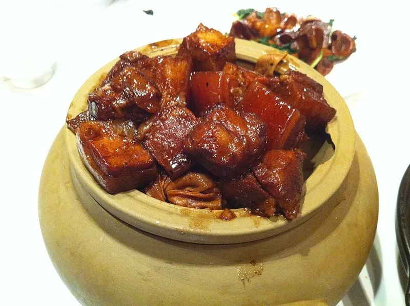
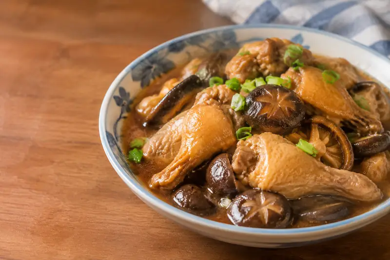

Pantry调味与干货
Bay leaves月桂叶
commonly stocked (not seen in this sample)Costco 常见（本次未见）
At Costco在 Costco
Typical pack常见规格: varies规格不定
Price varies; check the warehouse or costco.ca.价格随时变化，请看仓库或 costco.ca。
Sample date取样日期 2026-11-16. Availability varies by warehouse and season; this is not a stock guarantee.有无因门店和季节而异，不是库存保证。
Store and portion储存与分装
Store in a cool, dark place; refrigerate opened sauces as the label says; keep oils sealed and away from light.常温避光放；开封后的酱料冷藏（看瓶身标示）；油类避光密封。
Decant a small bottle for daily use and keep the rest sealed.大瓶买回后倒出小瓶常用，其余收好，减少开封次数。
Per 100 g (Canadian Nutrient File)每 100 克（加拿大营养素数据库）
Spices, bay leaf · code 172
314 kcal · protein蛋白 7.61 g · fat脂肪 8.36 g · carbs碳水 74.97 g · fibre纤维 26.3 g · sodium钠 23 mg
No priority allergen.无重点过敏原。
Recipes with this用到它的菜
 Beef Bourguignon法式红酒炖牛肉225 min分钟 · 4 servings份 · French法Braised Beef Brisket with Daikon萝卜牛腩145 min分钟 · 4 servings份 · Cantonese粤
Beef Bourguignon法式红酒炖牛肉225 min分钟 · 4 servings份 · French法Braised Beef Brisket with Daikon萝卜牛腩145 min分钟 · 4 servings份 · Cantonese粤 Braised Beef Noodle Soup红烧牛肉面140 min分钟 · 4 servings份 · Chinese home-style家常Irish Beef Stew爱尔兰炖牛肉210 min分钟 · 6 servings份 · Western西式
Braised Beef Noodle Soup红烧牛肉面140 min分钟 · 4 servings份 · Chinese home-style家常Irish Beef Stew爱尔兰炖牛肉210 min分钟 · 6 servings份 · Western西式 Harbin-style Borscht with Beef and Cabbage罗宋汤（哈尔滨红汤）120 min分钟 · 6 servings份 · Northeastern Chinese东北
Harbin-style Borscht with Beef and Cabbage罗宋汤（哈尔滨红汤）120 min分钟 · 6 servings份 · Northeastern Chinese东北 Chicken Noodle Soup美式鸡肉蔬菜面汤50 min分钟 · 6 servings份 · Western西式Sichuan Chili Beef Salad夫妻肺片（牛肉版）275 min分钟 · 4 servings份 · Sichuan川Coq au Vin红酒炖鸡155 min分钟 · 4 servings份 · French法Northeastern Mixed Vegetable Stew东北乱炖95 min分钟 · 4 servings份 · Northeastern Chinese东北
Chicken Noodle Soup美式鸡肉蔬菜面汤50 min分钟 · 6 servings份 · Western西式Sichuan Chili Beef Salad夫妻肺片（牛肉版）275 min分钟 · 4 servings份 · Sichuan川Coq au Vin红酒炖鸡155 min分钟 · 4 servings份 · French法Northeastern Mixed Vegetable Stew东北乱炖95 min分钟 · 4 servings份 · Northeastern Chinese东北
Red-Braised Pork Belly红烧肉110 min分钟 · 4 servings份 · Chinese home-style家常Clear Lamb Hot Pot清汤羊肉锅125 min分钟 · 4 servings份 · Chinese home-style家常Braised Lamb Shanks红焖羊腿140 min分钟 · 4 servings份 · Chinese home-style家常Lamb Soup with Bread羊肉泡馍（家常版）115 min分钟 · 3 servings份 · Northwestern / Xinjiang西北/新疆Classic Lasagna千层面120 min分钟 · 6 servings份 · Italian意Taiwanese Braised Pork Rice卤肉饭90 min分钟 · 4 servings份 · Fujian / Taiwanese闽台 Minestrone意式蔬菜汤（Minestrone）55 min分钟 · 6 servings份 · Italian意Roujiamo Chinese Burger肉夹馍140 min分钟 · 4 servings份 · Northwestern / Xinjiang西北/新疆
Minestrone意式蔬菜汤（Minestrone）55 min分钟 · 6 servings份 · Italian意Roujiamo Chinese Burger肉夹馍140 min分钟 · 4 servings份 · Northwestern / Xinjiang西北/新疆 Salmon Chowder三文鱼土豆浓汤45 min分钟 · 6 servings份 · Western西式
Salmon Chowder三文鱼土豆浓汤45 min分钟 · 6 servings份 · Western西式 Spaghetti with Bolognese Ragu意式番茄肉酱面（博洛尼亚肉酱）175 min分钟 · 4 servings份 · Italian意
Spaghetti with Bolognese Ragu意式番茄肉酱面（博洛尼亚肉酱）175 min分钟 · 4 servings份 · Italian意 Pickled Cabbage and Pork Belly Stew酸菜白肉95 min分钟 · 4 servings份 · Northeastern Chinese东北Taiwanese Beef Noodle Soup台湾红烧牛肉面195 min分钟 · 4 servings份 · Fujian / Taiwanese闽台
Pickled Cabbage and Pork Belly Stew酸菜白肉95 min分钟 · 4 servings份 · Northeastern Chinese东北Taiwanese Beef Noodle Soup台湾红烧牛肉面195 min分钟 · 4 servings份 · Fujian / Taiwanese闽台 Tomato Beef Brisket Soup西红柿牛腩汤140 min分钟 · 4 servings份 · Chinese home-style家常
Tomato Beef Brisket Soup西红柿牛腩汤140 min分钟 · 4 servings份 · Chinese home-style家常
Chicken and Mushroom Stew小鸡炖蘑菇100 min分钟 · 4 servings份 · Northeastern Chinese东北Tomato Beef Brisket Noodles番茄牛腩面115 min分钟 · 4 servings份 · Chinese home-style家常